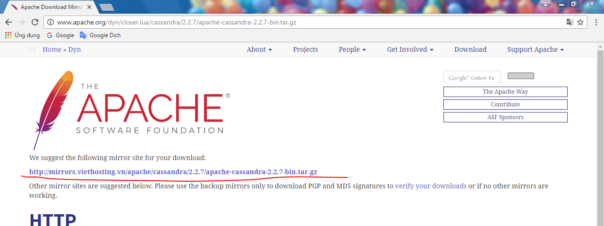

Cassandra là một cơ sở dữ liệu NoSQL, open-source. Cassandra phù hợp với cơ sở dữ liệu lớn, mình có thể dễ scale theo chiều ngang
1.1 Downoad cassandra từ trang chủ
lưu ý Sping mới chỉ hỗ chợ phiên bản cassandra 2.x.x nên khi sử dụng Spring ta sẽ chọn bản 2.2.7
Ta sẽ có bản cassandra 2.2.7

Giải nén file ra rồi chọn thư mục bin Run File cassandra.pat
ok ta có cassandra 2.2.7 với localhost/127.0.0.1:9042 vì đây là bản
archive nên ta để cửa sổ dos khi làm việc và tắt khi không sử dụng nữa ,,
bạn có thể cài bản install Datastax-community bản cài sẽ chạy ngầm tự
động start khi khởi động máy
1.2 downoad và cài công cụ quản lý và tương tác với databas Chúng ta sẽ dùng công cụ devcenter để tương tác với database
bạn có thể tự tìm hiểu bộ công cụ DBeaver Enterprise Edition một tool khá hay
Lưu ý : chúng ta cần chọn bản 32 hoặc 64 Bit Đúng với Phiên Bản ta sử dụng
Run DevCenter Rồi Connect tới Database
Câu lệnh gõ một vài câu lệnh Query và excute chúng
CREATE KEYSPACE IF NOT EXISTS example WITH replication = {'class': 'SimpleStrategy', 'replication_factor': '1'}
AND durable_writes = true;
CREATE TABLE IF NOT EXISTS example.greetings (
user text,
id timeuuid,
greet text,
creation_date timestamp,
PRIMARY KEY (user, id)
) WITH CLUSTERING ORDER BY (id DESC);
INSERT INTO example.greetings
("user", id, creation_date, greet)
VALUES('1', now(), '2016-01-01', 'chu');
SELECT "user", id, creation_date, greet
FROM example.greetings;
sau khi chuẩn bị dữ liệu như trên bạn downoad project demo về import vào Eclips rồi run